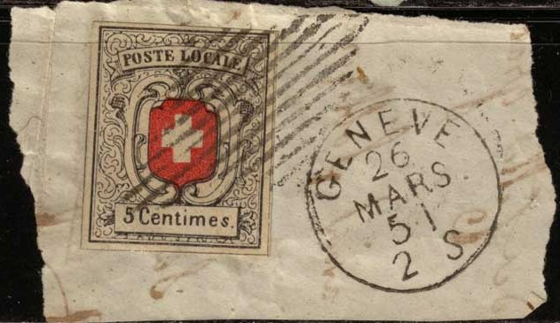
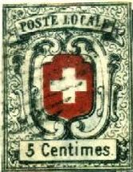
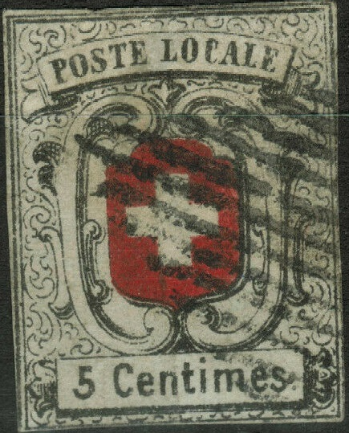
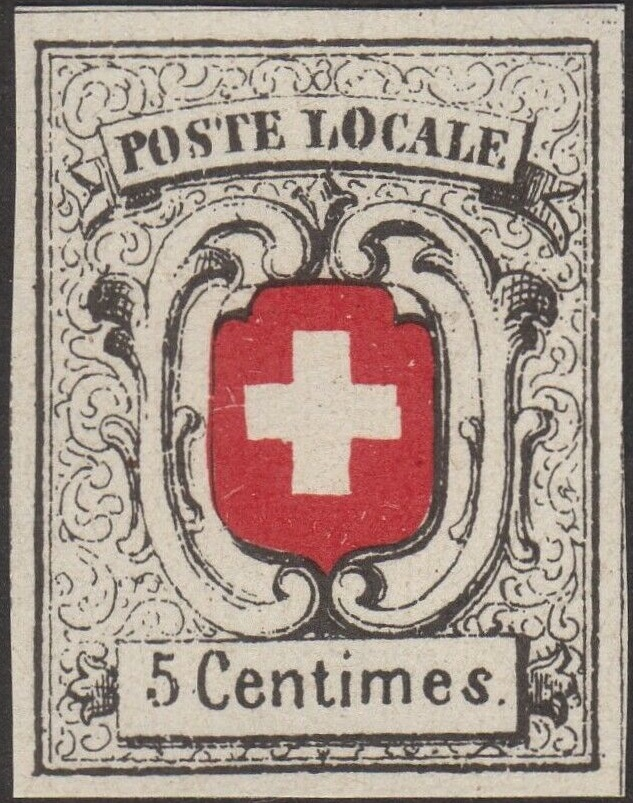
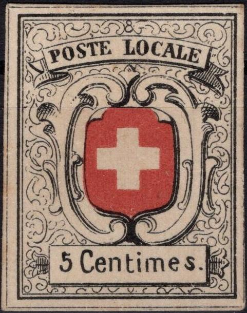

Return To Catalogue - Basel - Geneva - Vaud - Winterthur - Zurich - Switzerland overview
Note: on my website many of the
pictures can not be seen! They are of course present in the
catalogue;
contact me if you want to purchase it.
Literature: 'Forgeries of the "Cantonal" Stamps of Switzerland' by A de Reuterskiold (1907), I have not seen this book myself. Although much information can also be found in De Reuterskiold in 'The Philatelic Record' 29.
5 c black and red
Value of the stamps |
|||
vc = very common c = common * = not so common ** = uncommon |
*** = very uncommon R = rare RR = very rare RRR = extremely rare |
||
| Value | Unused | Used | Remarks |
| 5 c | RRR | RRR | |
Typical cancel:
(Grille in black)

(Forgery or genuine?)
In the genuine stamps, there is an '8' above the 'L' of 'LOCALE'. The horizontal thin inner frame line in the top right hand corner is continued to the thick outer line (source 'The forged stamps of all countries' by J.Dorn).
A similar stamp with inscription 'TESSINO 5 RAPPEN' is a bogus stamp, issued in Lyons (France), according to Album Weeds (I have never seen this stamp).
These two stamps look genuine, but they are almost identical
(even the cancels!), so probably forgeries!

Fournier forgeries
The above stamps could be Fournier forgeries. They come from a whole sheet of forgeries. However, they do not resemble the forgeries of 'The Fournier Album of Philatelic Forgeries', the background pattern is different (the background pattern of these forgeries is also different from the genuine stamps by the way). The second 'e' of 'Centimes' is too large, the 'i' of this word is placed almost undert the center of the arms just above it (it is placed much more to the right in the genuine stamps).

Fournier(?) forgery with grille cancel and 'GENEVE 26 MARS 51 2
S' cancel placed besides it, all on a piece of paper. This cancel
can be found in 'The Fournier Album of Philatelic Forgeries',
click on Switzerland Fournier forgeries
for more information.

Another Fournier forgery as found in the Fournier Album.

First forgery of Album Weeds
In the genuine stamp, there is a small '8' above the "L" of "LOCALE". The above stamps don't have this '8'. There is also no black frame in the white cross (the above stamps do have a black frame). An extra frameline exists all around the stamp, which is not present in the genuine stamps. The above forgeries are quite common and are referred to as first forgery in the book Album Weeds. This forgery is very old and was already mentioned in Schweizer Illustr. Briefmarken-Zeitung of May 1883 (source: http://briefmarken.ag/ ). I've seen these stamps being printed in one sheet, together with some 5 c "ORTSPOST" stamps, 4 c and 5 c Vaud stamps and the Winterthur stamps (essentially all stamps that were printed in black and red). Click here for such a sheet.

The above forgery has no '8' in the design.


The above two forgeries also don't have the '8' in the design, moreover the background pattern differs from a genuine stamp.
A forgery with 'FACSIMILE' overprint, most likely made by the
forger Champion, (also known as Geneva
forgery, it was made in 1888)
The above Champion forgery is mentioned as 7th forgery in Album Weeds, there it is referred to as Geneva forgery.

No "8" at the top of the stamp; "C" of
"LOCALE" too narrow and bottom of the "5"
sticking out too far at the bottom left.

A forgery with a slightly different background pattern. There is
a diamond like pattern under the 'L' of 'LOCALE'.

Another forgery

There are two ornaments missing just next to the sides of the
cross in this forgery type. De Reuterskiold in 'The Philatelic
Record' 29, page 200, says that this forgery was made in Coire (=
Chur in Switzerland); it is his forgery type 7.

Senf forgery with blue 'FALSCH'
overprint.
Peter Winter made some modern forgeries (somewhere in the 1980's):


(Winter forgery and a 'proof' also made by him with the red
colour missing)
These Winter forgeries can be found in large quantities, also with cancels.

Winter forgery with red cancel
I've also seen two of these Winter forgeries, printed together, both with a black oval 'P.D.' cancel.
Sperati forgeries:


Sperati forgeries
A page with Sperati 'reproductions' in black: top row: Vaud
central cross negative print and normal print; Vaud 4 c type A
and type B. Second row 5 c and 4 c negative print and negative
cross print. Third row: Neuchatel stamps (without center). Fourth
row: central crosses of the Neuchatel forgeries.
A Menke-Huber postcard with replicas of Vaud
and Neuchatel. Click here for more
Switzerland Menke-Huber postcards

Cut out from such a Menke-Huber postcard, often offered as the
genuine stamp.
{kind=link}
{kind=link}
{kind=link}
{kind=link}